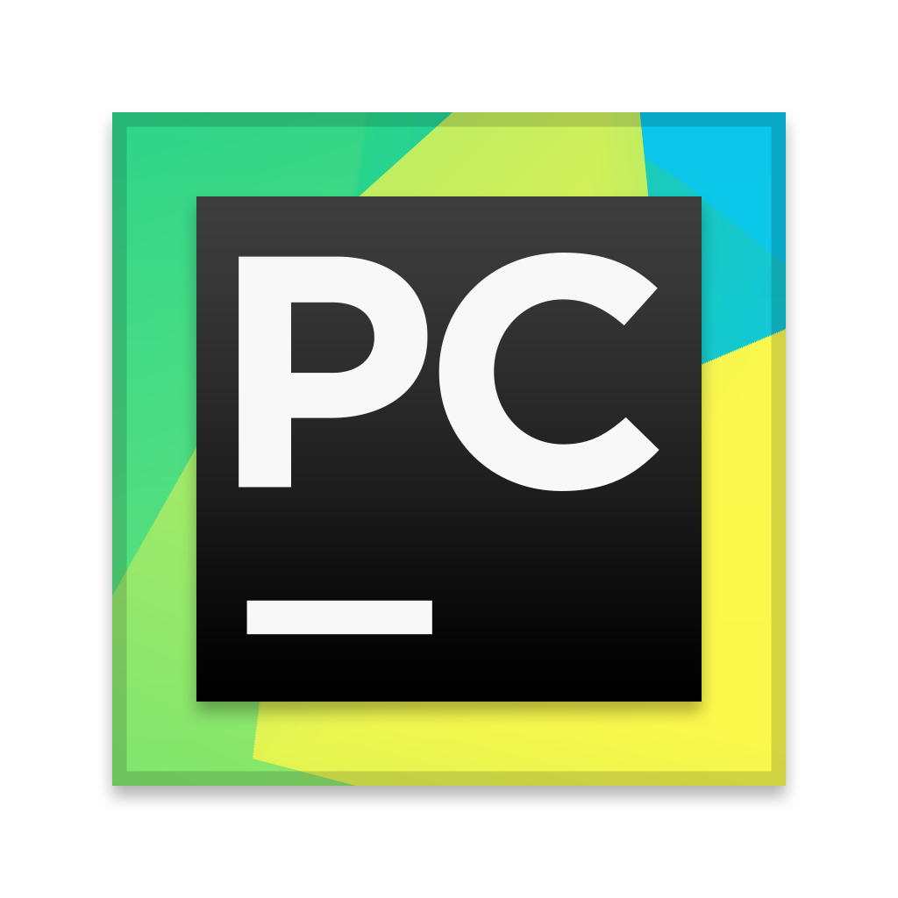
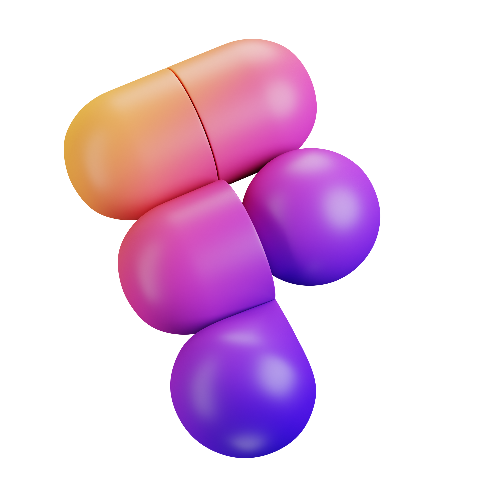

<link rel="stylesheet" href="style.css">
<link rel="preconnect" href="https://fonts.googleapis.com">
<link rel="preconnect" href="https://fonts.gstatic.com" crossorigin>
<link href="https://fonts.googleapis.com/css2?family=Kanit:wght@600&display=swap" rel="stylesheet">

<section class="main_navbar_menu">
    <div class="navbar-menu">
        <ul id="navbar">
            <li><a href="index.html">Home</a></li>
            <li><a href="about.html">About</a></li>
            <li><a href="skills.html">Skills</a></li>
            <li><a href="portfolio.html">Portfolio</a></li>
            <li><a href="contacts.html">Contacts</a></li>
        </ul>
        <hr />
    </div>
</section>
<section class="skills__section">
    <div class="skills-block">
        <ul id ="skills">

            <li>The main development environment that I use for 90% of my projects and tasks that require Python. 
                                                                  I've been working on it for several months now.</li>
            <li>An auxiliary development environment used to solve problems related to C++, C#.
                                                             I mainly use it for laboratory work at the university.
                                                             For example, css and html files are processed here.</li>
            <li>A handy tool for creating website design.
                                                                I also had work experience while learning the Pothon language and the Django framework.
                                                                It was also used to create this site, where you are now.</li>
    </div>
</section>